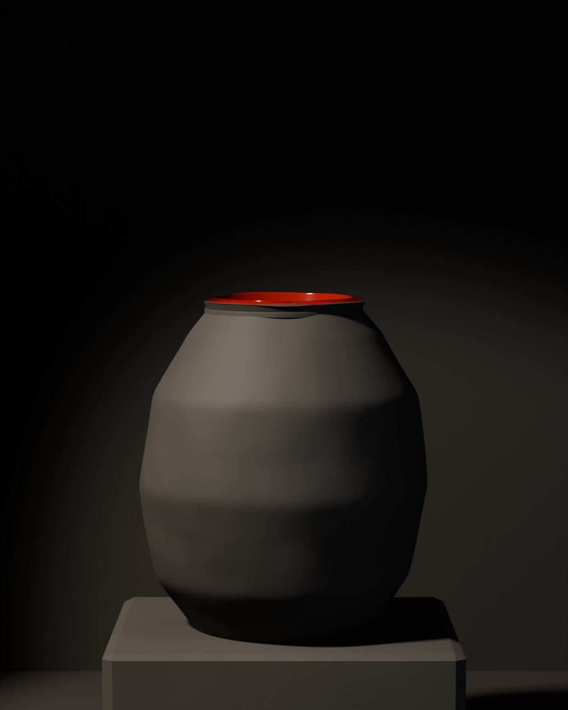
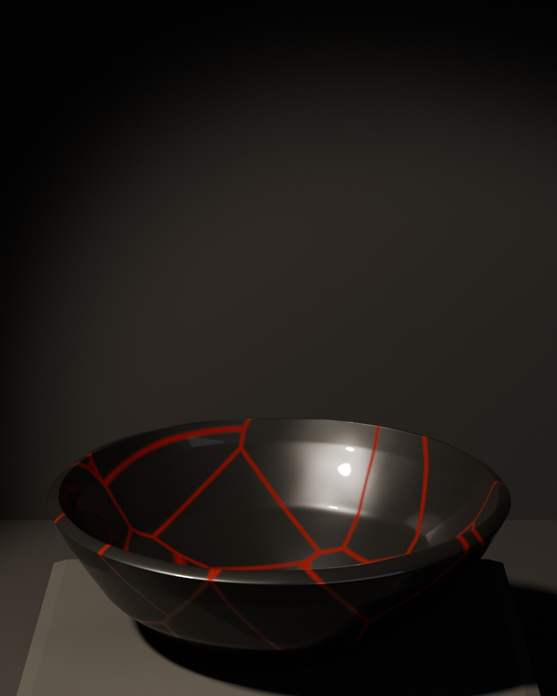
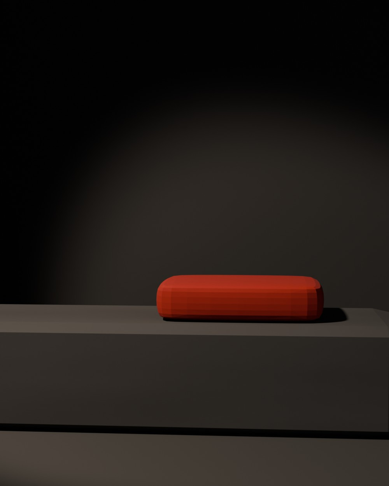
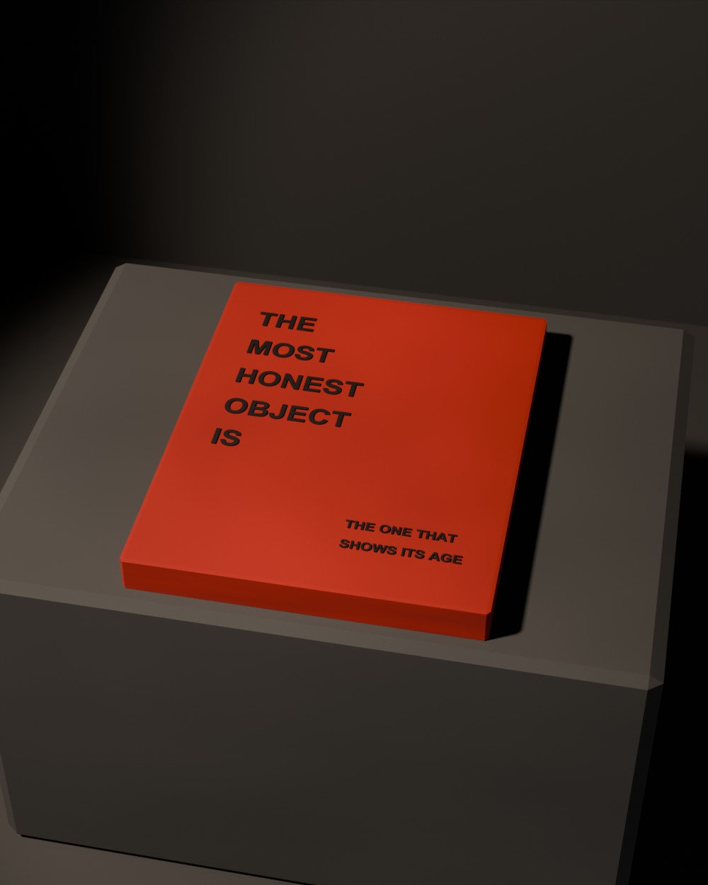
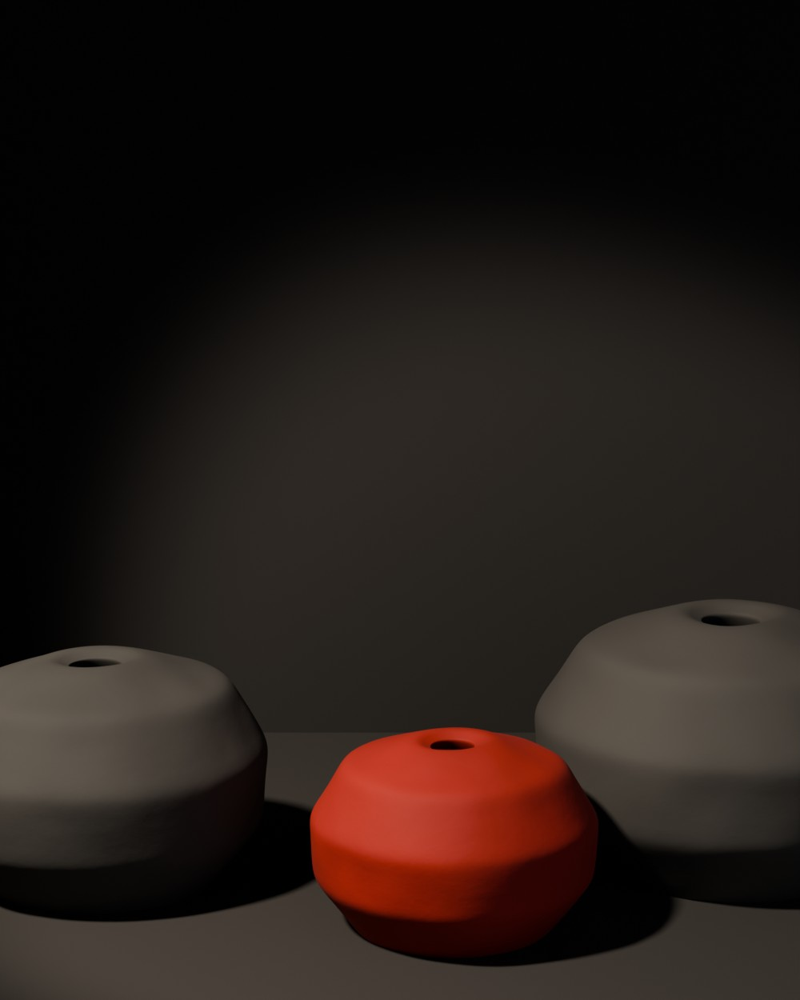

“RAW”
“MAGAZINE”
BLACK LIME PLASTER
RED LACQUER
c/o MIR ZUHAIR™
Things
that show
their age.
Loading…
Wabi-sabi · Art direction · 3D interiors · Editorial · Web
“Beautiful” because it isn’t finished.
Wabi-sabi is the Japanese idea that beauty lives in things that are rough, aged and incomplete: a bowl that wobbles, a crack mended where you can see it, a room with almost nothing in it. The quiet plaster rooms of minimalist architecture brought it into fashion’s world.
“RAW” sets that quiet against Virgil Abloh’s loud label language: the name in quotation marks, the materials printed like a factory tag, © and ™ where nobody expects them. Two colours only, black and red. Each issue is one object in a dark plaster room, lit by a single shaft of light.
- Role
- Concept, art direction, 3D objects and interiors, editorial design, web
- Palette
- Black lime plaster · raw stone · red lacquer
- Tools
- Blender (Cycles), WebGL, Canvas
01–05 The issues
+ The rooms





“RAW” is an independent student project. The label language is an homage to Virgil Abloh; it is not affiliated with any designer or house.
See SCRAP → See TALPUR →